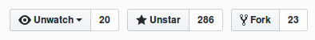

The place where Ruby, Rails and Kafka meet together
$ whoami
$ whoami
www: coditsu.io
www: mensfeld.pl
twitter: @maciejmensfeld
e-mail: maciej@coditsu.io
Please notify me if...
- I speak 2 fast
- I should repeat anything
- I should explain something better
- You have any questions
Agenda
- What is Kafka?
- Kafka + Ruby
- Karafka introduction
- Karafka on Rails
- Karafka use case example

What is Kafka?
A distributed streaming platform
A high-throughput distributed messaging system
What is Kafka?
- Kafka is designed to allow a single cluster to serve as the central data backbone for a large organization
- It can be elastically and transparently expanded without downtime
- It provides broadcasting to many applications
- Allows to build systems that are event based
Who uses Kafka?
- Yahoo
- Netflix
- Square
- Spotify
- Uber
- Tumblr
- Cisco
- Foursquare
- Shopify
- Oracle
- Urban Airship
- OVH
- And many more...
How Kafka works?

How Kafka works?

How Kafka works?

+

Kafka + Ruby
Kafka + Ruby
jruby-kafka
- Just a wrapper around the official Kafka Java client
- Won't work with cRuby based apps
- Requires reading Java docs ;(
Kafka + Ruby
poseidon
- Not maintained
- Still working if used with 0.8 Kafka API
- Does not support consumer groups
- Still used by some companies
Kafka + Ruby
ruby-kafka
- Maintained
- 0.9+ API support
- Sync and async producers
- Sponsored by Zendesk
- Default Karafka driver
Kafka + Ruby
phobos
- Maintained
- 0.9+ API support
- Wrapper around ruby-kafka
- Simplifies RAW ruby-kafka usage by adding configurators
A story of getting things done
What is Karafka?
- It is a microframework
- It was designed to simplify Kafka based applications development
- It allows developers to build "Rails like" apps that consume and produce messages
Why we developed Karafka?
We've needed a tool that would allow us to:
- build applications faster
- process faster
- handle events and messages from many sources and process them the same way
Why we developed Karafka?
Developers should focus on the business logic
But:
- threads
- signals
- connection management
- load balancing
- connection failures / reconnections
aren't business logic
Why even bother with messaging when there is HTTP and REST?
- HTTP does not provide broadcasting
- We often need to trigger many actions based on a single event
- We didn't want to maintain internal API clients
Why even bother with messaging when there is HTTP and REST?
- With a message broker you can replace microservices transparently
- You can obtain better microservices isolation
- Because you can create new microservices that use multiple different events from many sources
It really is about messaging
Real life is asynchronous
So, why our apps aren't?
Karafka uses goods that are already well known
- ruby-kafka
- Celluloid to introduce sockets clustering inside threads
- Sidekiq to support background data processing (not required)
- Rails app structure concept for bigger apps
- Sinatra app structure concept for small apps
Karafka framework components
Karafka is combined from few logical parts:
- Messages Consumer
- Router
- Application Responder
- Application Controller
- Application Worker
- CLI
Karafka framework components

How to use it?
# Gemfile
source 'https://rubygems.org'
gem 'karafka'
bundle install
bundle exec karafka install
Edit app.rb and update configuration settings
All the configutation options are described here:
github.com/karafka/karafka
Karafka conventions and features
Karafka conventions and features
Karafka has a routing engine
App.routes.draw do
# If you work with JSON data, only controller is required
topic :videos_created do
controller Videos::VideosCreatedController
end
topic :incoming_messages do
group :composed_application
controller Videos::DetailsController
worker Workers::DetailsWorker
parser Parsers::BinaryToJson
interchanger Interchangers::Binary
end
end
Karafka conventions and features
NewVideosController #=> NewVideosWorker
Users::PaymentsController #=> Users::PaymentsWorker
By default Karafka builds a worker class per controller based on a controller name.
This will allow you to prioritize (if needed) Sidekiq workers
Karafka conventions and features
You can overwrite all of the default behaviours
App.routes.draw do
topic :new_videos do
controller Videos::NewVideosController
# Instead of a default Videos::NewVideosWorker
worker Videos::DifferentWorker
end
end
Karafka conventions and features
Karafka controllers are simple
All you need is a #perform method that will be executed asynchronously in response to an incoming message
class CreateVideosController < Karafka::BaseController
def perform
Video.create!(params[:video])
end
end
Karafka conventions and features
#before_enqueue filter that acts in a similar way to Rails #before_action
class CreateVideosController < Karafka::BaseController
before_enqueue -> {
throw(:abort) if params[:sent_at] < 1.minute.ago
}
end
It can be used to provide first layer data filtering. If it throws :abort, Sidekiq task won't be scheduled
Karafka conventions and features
There are also few usefull CLI commands available:
bundle exec karafka [COMMAND]
karafka console
karafka flow
karafka help [COMMAND]
karafka info
karafka install
karafka routes
karafka server
karafka worker
Karafka conventions and features
Responders help preventing bugs when you design a receive-respond applications that handle multiple incoming and outgoing topics.
class ExampleResponder < ApplicationResponder
topic :users_notified
def respond(user)
respond_to :users_notified, user
end
end
Karafka performance
- Is strongly dependent on what you do in your code
- Redis performance (for Sidekiq) is a factor as well (if used)
- Message size is a factor
Karafka performance
- Single process can handle around 30 000 messages/sec
- Less than a ms to send a message with the slowest (secure) mode (Kafka request.required.acks -1)
- Less than 1/10 of a ms to send a message with in the 0 mode (Kafka request.required.acks 0)
Karafka framework scalability
Each scaling strategy targets a different problem
Scaling strategies can be combined
Following strategies are available:
- Scaling using multiple Karafka threads
- Scaling using Kafka partitions
- Scaling using Karafka clusterization
Karafka on Rails
Karafka on Rails
- Karafka is distributed as a single gem, so it can become a part of any Ruby on Rails app easily
- Using Karafka from your existing Rails apps allows you to make big changes by making small steps
Karafka on Rails
- Start by generating messages from your current applications via WaterDrop
- With WaterDrop you can tell your Karafka apps what your other Ruby components are doing
def create
video = Video.create!(params[:video])
WaterDrop::Message.new(:video_created, video.to_json).send!
respond_with video
end
Karafka use case example
Kafka + Karafka
as an event sourcing backbone
Coditsu is a comprehensive platform for insightful code analysis, automated code review and programmers work and habits evaluation.
Kafka + Karafka
as an event sourcing backbone
- 10 Ruby on Rails + Karafka separate applications
- 500-800 daily commit analysis (each from 15-20 perspectives)
- 300+ daily monitored programmers
- 2mln+ offenses detected
- 60k+ daily analysis and insights metric points
Kafka + Karafka
as an event sourcing backbone

Kafka + Karafka
as an event sourcing backbone
- Every single information that is significant goes through Kafka
- Applications don't care about origin of an event/message
- Downtimes aren't problem as applications will catch-up to the current state
WANT TO CONTRIBUTE?

- The more people star it, the more people use it
- The more people use it, the more people star it
- There are many issues you can help us fix